2019年普通高等学校招生全国统一考试（全国I卷）
理科综合
注意事项：
1．答卷前，考生务必将自己的姓名、准考证号填写在答题卡上。
2．回答选择题时，选出每小题答案后，用铅笔把答题卡上对应题目的答案标号涂黑，如需改动，用橡皮擦干净后，再选涂其它答案标号。回答非选择题时，将答案写在答题卡上，写在本试卷上无效。
3．考试结束后，将本试卷和答题卡一并交回。
可能用到的相对原子质量：H 1 C 12 N 14 O 16 Mg 24 S 32 Fe 56 Cu 64
卷首校注：所附合订文档在化学页沿用了另一年份的原子质量表；这里按2019全国Ⅰ卷题面恢复，包括第35题计算所用Mg、Cu。
相关题目：第 7 题 · 第 8 题 · 第 9 题 · 第 10 题 · 第 11 题 · 第 12 题 · 第 13 题 · 第 26 题 · 第 27 题 · 第 28 题 · 第 35 题 · 第 36 题
一、选择题：本题共13个小题，每小题6分。共78分，在每小题给出的四个选项中，只有一项是符合题目要求的。
本册收录其中的化学第7—13题。
相关题目：第 7 题 · 第 8 题 · 第 9 题 · 第 10 题 · 第 11 题 · 第 12 题 · 第 13 题
返回原卷说明与相对原子质量 返回选择题说明
题目与已知条件
陶瓷是火与土的结晶，是中华文明的象征之一，其形成、性质与化学有着密切的关系。下列说法错误的是
A. “雨过天晴云破处”所描述的瓷器青色，来自氧化铁
B. 闻名世界的秦兵马俑是陶制品，由黏土经高温烧结而成
C. 陶瓷是应用较早的人造材料，主要化学成分是硅酸盐
D. 陶瓷化学性质稳定，具有耐酸碱侵蚀、抗氧化等优点
查看原题图／原始配图
所用高中知识
常见铁氧化物颜色、传统硅酸盐材料及高温烧结。
读题与思路
氧化铁Fe₂O₃是红棕色，并非青瓷的青色来源；青色与还原烧成时釉中Fe²⁺有关，A错误。黏土烧制、主要硅酸盐组成及通常耐化学侵蚀均符合传统陶瓷性质，但耐酸碱不是可抵抗所有强腐蚀介质的绝对说法。
分步解析
- A所称氧化铁是Fe2O3，本身呈红棕色。青瓷的青色与还原气氛烧制形成的Fe(Ⅱ)有关，不能归因于Fe2O3的颜色。
- 黏土经高温烧结形成陶制品，兵马俑为陶制品；传统陶瓷属于硅酸盐材料，B、C成立。
- 陶瓷一般化学稳定性较好，能耐多种酸碱侵蚀和氧化环境，D所述为材料通常性质。
检查与易错点
“氧化铁”与“含铁物种”不是同义词；也不能把“化学性质稳定”扩大成在所有强腐蚀条件下都不反应。
本题来源：paper2019 · doc-paper
返回原卷说明与相对原子质量 返回选择题说明
题目与已知条件
关于化合物2−苯基丙烯（
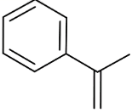
），下列说法正确的是
A. 不能使稀高锰酸钾溶液褪色
B. 可以发生加成聚合反应
C. 分子中所有原子共平面
D. 易溶于水及甲苯
查看原题图／原始配图
读题与思路
侧链结构CH₂=C(CH₃)Ph有可聚合碳碳双键，B成立。它也能被高锰酸钾氧化；甲基碳为sp³，三个氢不可能全与双键同面；烃类亲有机溶剂但不易溶于水，排除A、C、D。
分步解析
- 结构为C6H5—C(CH3)=CH2。C=C可被稀高锰酸钾氧化，故A“不能褪色”错误。
- C=C断开π键可进行加成聚合，主链重复单元为—CH2—C(CH3)(C6H5)—，B正确。
- 甲基碳及与之相连的3个H、另一个C呈四面体关系，排除所有原子共平面，C错误。该烃无易与水形成强相互作用的极性官能团，难溶于水、易溶于甲苯，D错误。
检查与易错点
“苯环是平面结构”只能约束苯环局部，不能推及整分子。加聚不消去小分子。
本题来源：paper2019 · doc-paper
返回原卷说明与相对原子质量 返回选择题说明
题目与已知条件
实验室制备溴苯的反应装置如下图所示，关于实验操作或叙述错误的是
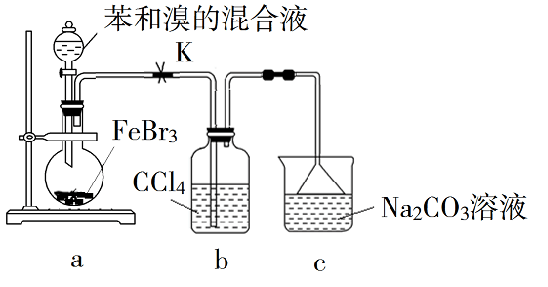
A. 向圆底烧瓶中滴加苯和溴的混合液前需先打开K
B. 实验中装置b中的液体逐渐变为浅红色
C. 装置c中的碳酸钠溶液的作用是吸收溴化氢
D. 反应后的混合液经稀碱溶液洗涤、结晶，得到溴苯
查看原题图／原始配图
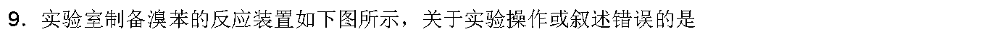
原始配图 1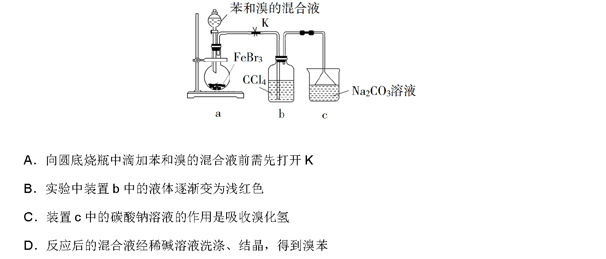
原始配图 2所用高中知识
苯的溴代、气路通畅、溴的萃取吸收、酸性尾气处理、分液。
读题与思路
先打开K保证产气出口畅通；b中的CCl₄吸收逸出的Br₂而变色，c中Na₂CO₃吸收HBr。溴苯在通常条件为液体，稀碱洗后用分液、必要时蒸馏提纯，不能以结晶获得，所以D错误。
分步解析
- 加液前打开K，使装置连通并平衡压强，混合液才易于从分液漏斗流下，A成立。
- 反应放出的HBr夹带挥发的Br2。Br2易溶于CCl4，使b内液体变为浅红色；随后HBr被c内碳酸钠吸收，B、C成立。
- 粗溴苯可用稀碱洗去溴和酸性杂质，再分液、必要时蒸馏。溴苯常温为液体，D提出的结晶不能按本流程得到它。
检查与易错点
装置b主要吸收夹带的溴，不把CCl₄称为HBr的碱性吸收剂；洗涤和最终分离是不同操作。
本题来源：paper2019 · doc-paper
返回原卷说明与相对原子质量 返回选择题说明
题目与已知条件
固体界面上强酸的吸附和离解是多相化学在环境、催化、材料科学等领域研究的重要课题。下图为少量HCl气体分子在253 K冰表面吸附和溶解过程的示意图。下列叙述错误的是
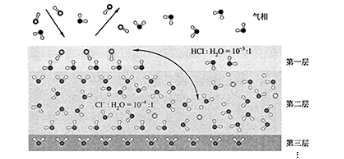
A．冰表面第一层中，HCl以分子形式存在
B．冰表面第二层中，H⁺浓度为5×10⁻³ mol·L⁻¹（设冰的密度为0.9 g·cm⁻³）
C．冰表面第三层中，冰的氢键网格结构保持不变
D．冰表面各层之间，均存在可逆反应HCl ⇌ H⁺+Cl⁻
查看原题图／原始配图
原始配图 1
所用高中知识
模型读图、浓度换算、微粒形态与氢键网络。
读题与思路
图示第一层HCl保持成对原子，第二层形成Cl⁻与水合H⁺，第三层没有HCl进入。第二层1 L冰含水900/18=50 mol；Cl⁻/H₂O=10⁻⁴给[H⁺]≈0.005 mol/L。不能把第一、二层的吸附/电离迁移说成每一层均有同样电离平衡，故D错误。
分步解析
- 第一层画出H—Cl分子，说明在该层HCl以分子形式吸附，A符合模型。
- 取1 L冰：质量=0.9×1000=900 g，n(H2O)=900/18=50 mol。第二层Cl−∶H2O=10−4∶1，故c(Cl−)=50×10−4=5×10−3 mol·L−1；由HCl离解的1∶1关系，c(H+)同值，B成立。
- 第三层仍显示冰的规则氢键网络，C成立。第一层分子吸附、第二层离解、第三层保持冰结构，不能断言各层均存在所列HCl离解平衡，D错误。
检查与易错点
浓度计算用题设冰密度而非水的1.0 g·cm⁻³；比例10⁻⁴属于第二层，第一层的10⁻³不可代入。
本题来源：paper2019 · doc-paper
返回原卷说明与相对原子质量 返回选择题说明
题目与已知条件
NaOH溶液滴定邻苯二甲酸氢钾（邻苯二甲酸H2A的Ka1=1.1×10−3
，Ka2=3.9×10−6）溶液，混合溶液的相对导电能力变化曲线如图所示，其中b点为反应终点。下列叙述错误的是
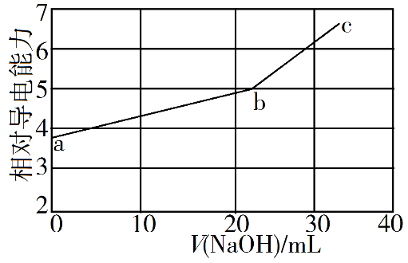
A. 混合溶液的导电能力与离子浓度和种类有关
B.
Na+与A2−的导电能力之和大于HA−的
C. b点的混合溶液pH=7
D.
c点的混合溶液中，c(Na+)>c(K+)>c(OH−)
查看原题图／原始配图
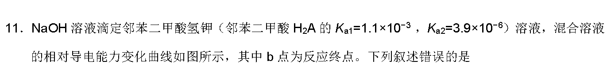
原始配图 1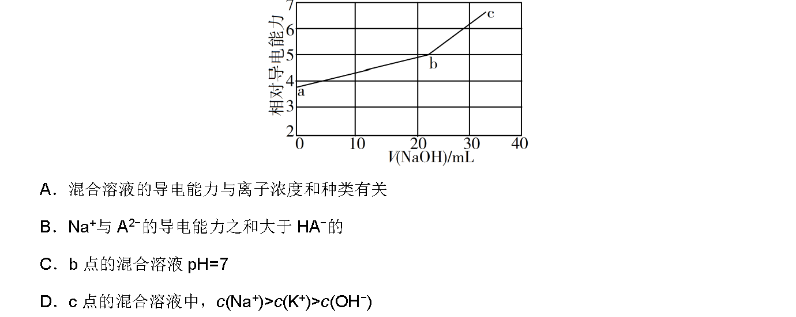
原始配图 2所用高中知识
弱酸盐中和、盐类水解、导电能力与浓度比较。
读题与思路
反应为HA⁻+OH⁻→A²⁻+H₂O，随Na⁺加入，电导增长。b点仅把酸式盐转为NaKA盐，A²⁻水解使pH>7，故C错误。c点NaOH过量但图中用量尚小于2倍当量，所以Na⁺>K⁺>OH⁻的次序符合题设。
分步解析
- 反应为HA−+OH−→A2−+H2O。导电能力取决于离子种类、浓度与迁移能力，A成立。
- a→b过程中HA−被Na+和A2−替代，曲线电导上升，支持B的相对导电能力判断。
- b点主要溶质是NaKA；A2−+H2O⇌HA−+OH−使溶液呈碱性，pH大于7，C错误。
- c点NaOH已过量，n(Na+)大于原有n(K+)；c位于加碱量尚小于2倍终点量的位置，剩余OH−少于K+。同一溶液体积相同，故c(Na+)>c(K+)>c(OH−)。
检查与易错点
“反应终点”“中性点”不能等同；D依赖图中c点位置，不适用于任意过量NaOH。
本题来源：paper2019 · doc-paper
返回原卷说明与相对原子质量 返回选择题说明
题目与已知条件
利用生物燃料电池原理研究室温下氨的合成，电池工作时MV2+/MV+在电极与酶之间传递电子，示意图如下所示。下列说法错误的是
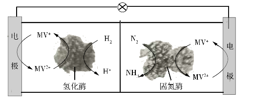
A. 相比现有工业合成氨，该方法条件温和，同时还可提供电能
B. 阴极区，在氢化酶作用下发生反应H2+2MV2+=2H++2MV+
C. 正极区，固氮酶为催化剂，N2发生还原反应生成NH3
D. 电池工作时质子通过交换膜由负极区向正极区移动
查看原题图／原始配图
所用高中知识
原电池正负极、阳阴极定义、氧化还原介体、质子迁移。
读题与思路
左侧H₂失电子为阳极/负极，MV在酶和电极间往复传电子；右侧N₂得电子为阴极/正极。B的酶促反应式本身配平，但标成“阴极区”错。生成的质子由负极区经膜进入正极区参与氨合成，D正确。
分步解析
- 左侧H2被氧化，总半反应为H2→2H++2e−，故为负极/阳极区；右侧N2还原成NH3，为正极/阴极区。
- 在左侧氢化酶作用下，H2+2MV2+→2H++2MV+，随后MV+在电极上放电子再生MV2+。该均相介体反应本身原子、电荷均配平，错误是B将它写在“阴极区”。
- 右侧净反应N2+6H++6e−→2NH3，固氮酶催化还原。左侧生成的H+经交换膜移向正极侧，补充其消耗。
- 装置在室温运行且向外电路输出电能，因此条件温和、可供电的A，以及C、D，均与图一致。
检查与易错点
B没有显式电子并非错误：它描述的是介体与氢的反应，不是电极半反应。左侧阳极电荷核对：+4=+2+2。不采用转载解析中将负极称阴极的错误。
本题来源：paper2019 · doc-paper
返回原卷说明与相对原子质量 返回选择题说明
题目与已知条件
科学家合成出了一种新化合物（如图所示），其中W、X、Y、Z为同一短周期元素，Z核外最外层电子数是X核外电子数的一半。下列叙述正确的是
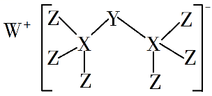
A. WZ的水溶液呈碱性
B. 元素非金属性的顺序为X>Y>Z
C. Y的最高价氧化物的水化物是中强酸
D. 该新化合物中Y不满足8电子稳定结构
查看原题图／原始配图
所用高中知识
主族价电子、共价键、形式电荷、周期律和磷酸。
读题与思路
图中Z只形成单键，X有四键，Y有两键并带全体系负电。Z最外层7恰为X原子14电子的一半，所以Si、Cl锁定第三周期，再得Na与P。NaCl中性，非金属性Cl>P>Si，P保持八电子，只有H₃PO₄为中强酸的C成立。
分步解析
- 端位Z为Cl时价电子数7，X核外电子数为14，即Si，正好符合四价连接。W形成+1离子且同周期，为Na。Y与两个Si各成一个单键，带−1形式电荷，价电子5，故为P。
- WZ是NaCl，强酸强碱盐在高中近似下水溶液中性；同周期非金属性Si<P<Cl，A、B错误。
- P的最高价氧化物水化物为H3PO4，按中学常用分类属于中强酸，C正确。
- P接受一个电子后与两侧Si成两个单键并保留两对孤电子，周围计2×2+2×2=8个电子，D错误。
答案
C；W、X、Y、Z依次为Na、Si、P、Cl。
检查与易错点
电子数关系是“Z最外层电子数=X全部核外电子数的一半”，不是X最外层电子数的一半。
本题来源：paper2019 · doc-paper
三、非选择题：共174分，第22~32题为必考题，每个试题考生都必须作答。第33~38题为选考题，考生根据要求作答。
（一）必考题：共129分。
相关题目：第 26 题 · 第 27 题 · 第 28 题 · 第 35 题 · 第 36 题
返回原卷说明与相对原子质量 返回非选择题说明
题目与已知条件
（14分）
硼酸（H₃BO₃）是一种重要的化工原料，广泛应用于玻璃、医药、肥料等工艺。一种以硼镁矿（含Mg₂B₂O₅·H₂O、SiO₂及少量Fe₂O₃、Al₂O₃）为原料生产硼酸及轻质氧化镁的工艺流程如下：
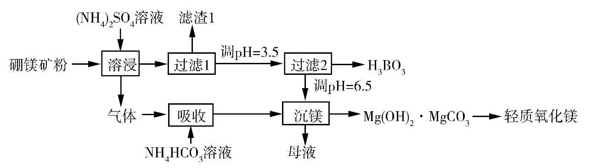
回答下列问题：
（1）在95 ℃“溶浸”硼镁矿粉，产生的气体在“吸收”中反应的化学方程式为________。
（2）“滤渣1”的主要成分有________。为检验“过滤1”后的滤液中是否含有Fe³⁺离子，可选用的化学试剂是________。
（3）根据H₃BO₃的解离反应：H₃BO₃+H₂O ⇌ H⁺+B(OH)₄⁻，Kₐ=5.81×10⁻¹⁰，可判断H₃BO₃是________酸；在“过滤2”前，将溶液pH调节至3.5，目的是________。
（4）在“沉镁”中生成Mg(OH)₂·MgCO₃沉淀的离子方程式为________，母液经加热后可返回________工序循环使用。由碱式碳酸镁制备轻质氧化镁的方法是________。
查看原题图／原始配图
原始配图 1
所用高中知识
铵盐反应、弱酸解离、沉淀与物料循环、热分解。
读题与思路
铵盐热浸含镁硼酸盐放NH₃，和NH₄HCO₃合成(NH₄)₂CO₃。难溶SiO₂/Fe₂O₃/Al₂O₃留在渣1，Fe³⁺可用KSCN检验。Ka很小且每次只给1H⁺，硼酸为一元弱酸；降pH压制解离、析出分子态硼酸。沉镁按2Mg²⁺+2CO₃²⁻+H₂O→Mg(OH)₂·MgCO₃↓+CO₂↑配平；母液(NH₄)₂SO₄循环溶浸，碱式盐煅烧给2MgO+H₂O+CO₂。
分步解析
- （1）溶浸时NH4+参与矿物转化并放出NH3。用NH4HCO3吸收：NH4HCO3+NH3→(NH4)2CO3，可供沉镁。
- （2）不溶的SiO2、Fe2O3、Al2O3进入滤渣1。检验少量Fe3+可加KSCN溶液，出现血红色配合物则说明存在Fe3+。
- （3）H3BO3+H2O⇌H++B(OH)4−每分子只产生1个H+，且Ka=5.81×10−10很小，故为一元弱酸。pH调到3.5使平衡左移，把B(OH)4−转为H3BO3，促使硼酸析出。
- （4）可写2Mg2++2CO32−+H2O→Mg(OH)2·MgCO3↓+CO2↑。另一个等价的物种表达为2Mg2++3CO32−+2H2O→Mg(OH)2·MgCO3↓+2HCO3−。
- 母液主要保留(NH4)2SO4，加热除去多余挥发成分后可回到溶浸。煅烧碱式碳酸镁：Mg(OH)2·MgCO3→2MgO+CO2↑+H2O↑。
答案
（1）NH₄HCO₃+NH₃→(NH₄)₂CO₃。（2）SiO₂、Fe₂O₃、Al₂O₃；KSCN溶液。（3）一元弱酸；使硼酸盐转为硼酸并析出。（4）2Mg²⁺+3CO₃²⁻+2H₂O ══ Mg(OH)₂·MgCO₃↓+2HCO₃⁻（或2Mg²⁺+2CO₃²⁻+H₂O ══ Mg(OH)₂·MgCO₃↓+CO₂↑）；溶浸；高温煅烧。
检查与易错点
第一种沉镁式左右电荷均0，第二种均−2；二者结合碳酸的平衡可互换。H₃BO₃虽有3个H，也不能仅由分子式判为三元酸。源图乱码箭头在正文中按可逆号清晰重排。
本题来源：paper2019 · doc-paper
返回原卷说明与相对原子质量 返回非选择题说明
题目与已知条件
（15分）
硫酸铁铵[NH4Fe(SO4)2·xH2O]是一种重要铁盐。为充分利用资源，变废为宝，在实验室中探究采用废铁屑来制备硫酸铁铵，具体流程如下：
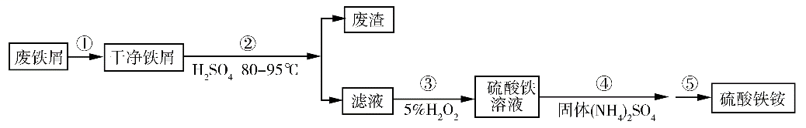
回答下列问题：
（1）步骤①的目的是去除废铁屑表面的油污，方法是_________________。
（2）步骤②需要加热的目的是_________________，温度保持80~95
℃，采用的合适加热方式是_________________。铁屑中含有少量硫化物，反应产生的气体需要净化处理，合适的装置为_________________（填标号）。
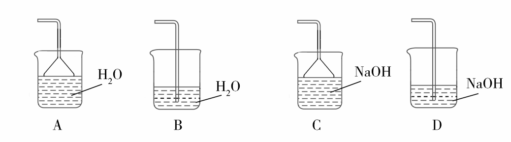
（3）步骤③中选用足量的H2O2，理由是_________________。分批加入H2O2，同时为了_________________，溶液要保持pH小于0.5。
（4）步骤⑤的具体实验操作有______________，经干燥得到硫酸铁铵晶体样品。
（5）采用热重分析法测定硫酸铁铵晶体样品所含结晶水数，将样品加热到150
℃时，失掉1.5个结晶水，失重5.6%。硫酸铁铵晶体的化学式为______________。
查看原题图／原始配图
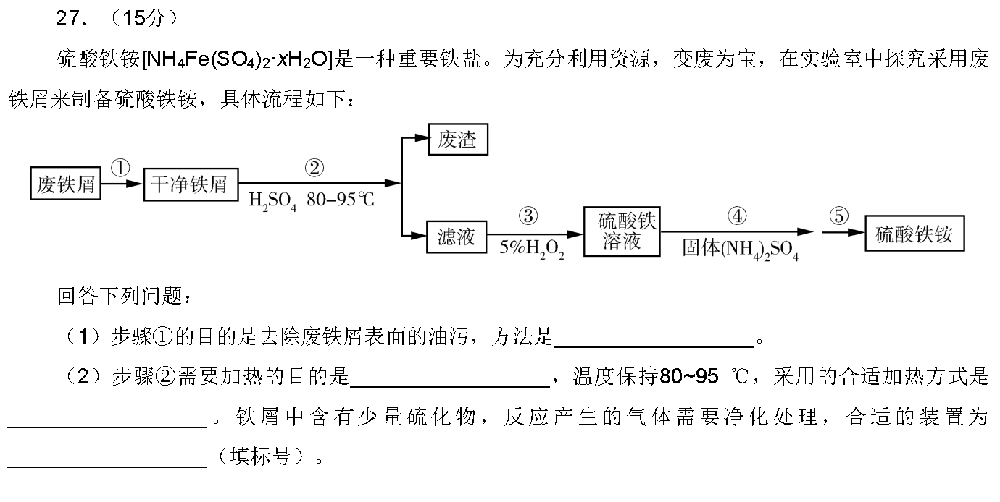
原始配图 1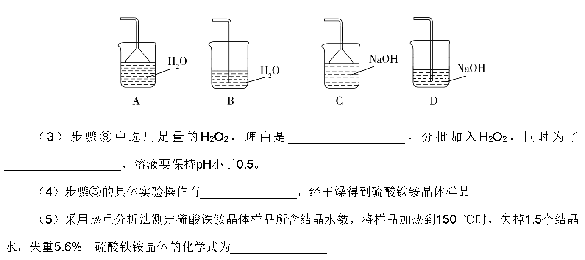
原始配图 2所用高中知识
油污碱洗、氧化还原、H₂S吸收与防倒吸、结晶和热重法。
读题与思路
热碱清除油脂、水洗去碱，80–95 ℃选水浴并加速酸浸；含H₂S尾气用NaOH及防倒吸倒置漏斗C。H₂O₂把Fe²⁺全氧化且还原成水，不添杂质；pH<0.5抑制Fe³⁺水解。蒸浓、冷却、过滤洗涤得到晶体。按失1.5H₂O失重5.6%，27/(266+18x)=0.056，得x≈12。
分步解析
- （1）先用热碱液煮洗铁屑，再用水洗净。碱促进油脂水解、乳化，加热提高除油速率。
- （2）加热加快Fe与酸反应；80—95 ℃低于水沸点，可采用水浴均匀控制。夹杂的硫化物与酸产生H2S，应选NaOH吸收且能防倒吸的C。
- （3）足量H2O2使Fe2+全部氧化为Fe3+：2Fe2++H2O2+2H+→2Fe3++2H2O，且不引入新的杂质离子。pH<0.5抑制Fe3+水解，避免Fe(OH)3损失铁。
- （4）加入(NH4)2SO4后，蒸发浓缩、冷却结晶、过滤、洗涤，最后干燥。带结晶水的产品不应直接蒸干并灼烧。
- （5）无水NH4Fe(SO4)2式量为18+56+2×96=266。1.5H2O的质量为27，27/(266+18x)=0.056，解得x≈12。用x=12回代27/482=5.60%，符合有效数字。
答案
（1）热碱液煮洗后水洗。（2）加快反应；水浴；C。（3）充分氧化Fe²⁺、不引入杂质；抑制Fe³⁺水解。（4）蒸发浓缩、冷却结晶、过滤、洗涤。（5）NH₄Fe(SO₄)₂·12H₂O。
检查与易错点
H₂S有毒且易被碱吸收，尾气装置须同时考虑吸收和倒吸。晶体中x约为整数12，不能因测量保留位数写12.01。
本题来源：paper2019 · doc-paper
返回原卷说明与相对原子质量 返回非选择题说明
题目与已知条件
（14分）
水煤气变换[CO(g)+H2O(g)=CO2(g)+H2(g)]是重要的化工过程，主要用于合成氨、制氢以及合成气加工等工业领域中。回答下列问题：
（1）Shibata曾做过下列实验：①使纯H2缓慢地通过处于721
℃下的过量氧化钴CoO(s)，氧化钴部分被还原为金属钴Co(s)，平衡后气体中H2的物质的量分数为0.0250。
②在同一温度下用CO还原CoO(s)，平衡后气体中CO的物质的量分数为0.0192。
根据上述实验结果判断，还原CoO(s)为Co(s)的倾向是CO_________H2（填“大于”或“小于”）。
（2）721 ℃时，在密闭容器中将等物质的量的CO(g)和H2O(g)混合，采用适当的催化剂进行反应，则平衡时体系中H2的物质的量分数为_________（填标号）。
A．＜0.25 B．0.25 C．0.25~0.50 D．0.50 E．＞0.50
（3）我国学者结合实验与计算机模拟结果，研究了在金催化剂表面上水煤气变换的反应历程，如图所示，其中吸附在金催化剂表面上的物种用*标注。
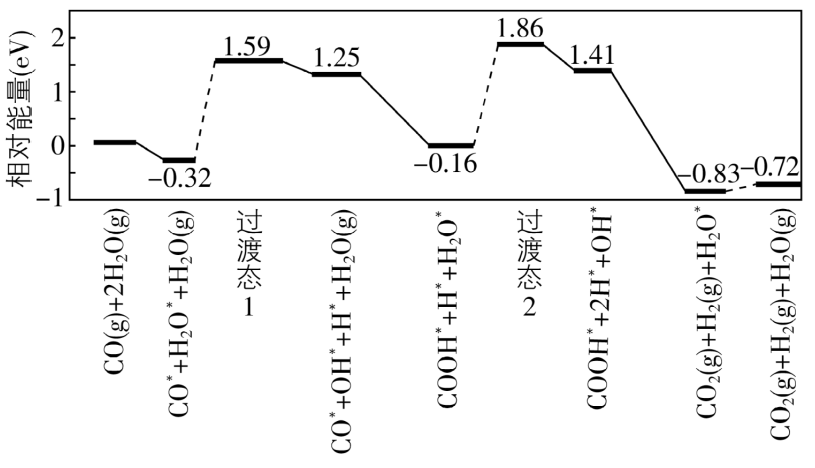
可知水煤气变换的ΔH________0（填“大于”“等于”或“小于”），该历程中最大能垒（活化能）E正=_________eV，写出该步骤的化学方程式_______________________。
（4）Shoichi研究了467 ℃、489
℃时水煤气变换中CO和H2分压随时间变化关系（如下图所示），催化剂为氧化铁，实验初始时体系中的PH2O和PCO相等、PCO2和PH2相等。
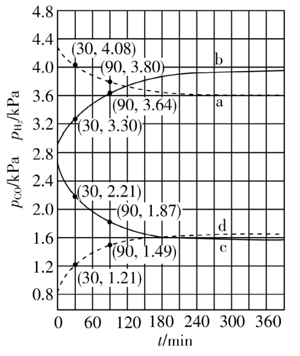
计算曲线a的反应在30~90 min内的平均速率v(a)=___________kPa·min−1。467
℃时PH2和PCO随时间变化关系的曲线分别是___________、___________。489
℃时PH2和PCO随时间变化关系的曲线分别是___________、___________。
查看原题图／原始配图
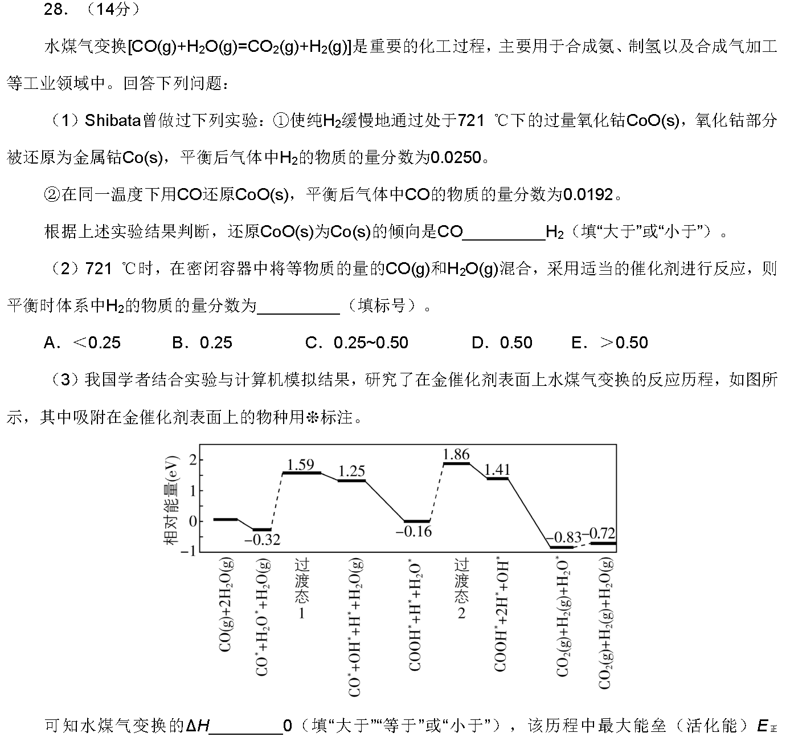
原始配图 1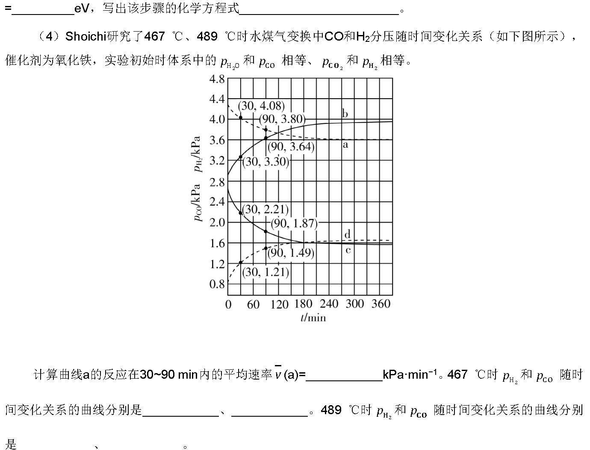
原始配图 2所用高中知识
化学平衡常数的组合；化学计量三段式；能量图；分压速率。
读题与思路
同温度还原CoO的K分别为0.975/0.025=39和0.9808/0.0192≈51.08，CO倾向更大。水煤气变换K=51.08/39≈1.31；等摩尔起始时产物H₂分数=√K/[2(1+√K)]≈0.267，选C。能量终点低于起点，ΔH<0；最大能垒1.86−(−0.16)=2.02 eV，对应H₂O*解离。a平均速率(4.08−3.80)/60=4.67×10⁻³。低温平衡H₂/CO更大，所以467 ℃为b/c，489 ℃为a/d。
分步解析
- （1）CoO+H2⇌Co+H2O的K1=0.9750/0.0250=39；CoO+CO⇌Co+CO2的K2=0.9808/0.0192≈51.08。CO还原后剩余分数更低、K更大，故CO还原倾向大于H2。
- （2）反应Ⅱ减反应Ⅰ得CO+H2O⇌CO2+H2，K=K2/K1≈1.310。设初始CO、H2O各1 mol，反应x mol，平衡x²/(1−x)²=1.310，x≈0.534。总量仍2 mol，H2分数x/2≈0.267，在0.25—0.50之间，选C。
- （3）终态能量−0.72 eV低于起始0，故ΔH<0。第一处正向能垒1.59−(−0.32)=1.91 eV；第二处1.86−(−0.16)=2.02 eV，为最大值。对应吸附水裂解H2O*→H*+OH*，旁观的COOH*、H*在前后保留。
- （4）a曲线从30 min的4.08 kPa降至90 min的3.80 kPa，平均反应速率用消耗量的正值：(4.08−3.80)/(90−30)=0.00467 kPa·min−1。
- 任一温度下，由初始配比和1∶1反应计量有p(H2O)=p(CO)、p(CO2)=p(H2)，故K=[p(H2)/p(CO)]²。放热反应在较低467 ℃的K较大，对应平衡氢分压较高的b、CO分压较低的c；489 ℃则H2为a、CO为d。
答案
（1）大于。（2）C，H₂分数约0.267。（3）小于；2.02 eV；H₂O*→H*+OH*。（4）4.7×10⁻³ kPa·min⁻¹；467 ℃为b、c，489 ℃为a、d。
检查与易错点
不能用最高峰1.86直接作为活化能；需减去前一谷底−0.16。选择曲线依据平衡分压之比，不是曲线向上就一定是H₂。
本题来源：paper2019 · doc-paper
（二）选考题：共45分。请考生从2道物理题、2道化学题、2道生物题中每科任选一题作答。如果多做，则每科按所做的第一题计分。
相关题目：第 35 题 · 第 36 题
返回原卷说明与相对原子质量 返回非选择题说明 返回选考题说明
题目与已知条件
（15分）
[化学——选修3：物质结构与性质]
在普通铝中加入少量Cu和Mg后，形成一种称为拉维斯相的MgCu2微小晶粒，其分散在Al中可使得铝材的硬度增加、延展性减小，形成所谓“坚铝”，是制造飞机的主要材料。回答下列问题：
（1）下列状态的镁中，电离最外层一个电子所需能量最大的是____________(填标号)。
A．[Ne] 3s[↑] B．[Ne] 3s[↑↓] C．[Ne] 3s[↑] 3p[↑] D．[Ne] 3p[↑]
（2）乙二胺(H2NCH2CH2NH2)是一种有机化合物，分子中氮、碳的杂化类型分别是__________、__________。乙二胺能与Mg2+、Cu2+等金属离子形成稳定环状离子，其原因是__________，其中与乙二胺形成的化合物稳定性相对较高的是__________(填“Mg2+”或“Cu2+”)。
（3）一些氧化物的熔点如下表所示：
| 氧化物 |
Li2O |
MgO |
P4O6 |
SO2 |
| 熔点/°C |
1570 |
2800 |
23.8 |
−75.5 |
解释表中氧化物之间熔点差异的原因__________。
（4）图(a)是MgCu2的拉维斯结构，Mg以金刚石方式堆积，八面体空隙和半数的四面体空隙中，填入以四面体方式排列的Cu。图(b)是沿立方格子对角面取得的截面图。可见，Cu原子之间最短距离x=__________pm，Mg原子之间最短距离y=__________pm。设阿伏加德罗常数的值为NA，则MgCu2的密度是__________g·cm−3(列出计算表达式)。
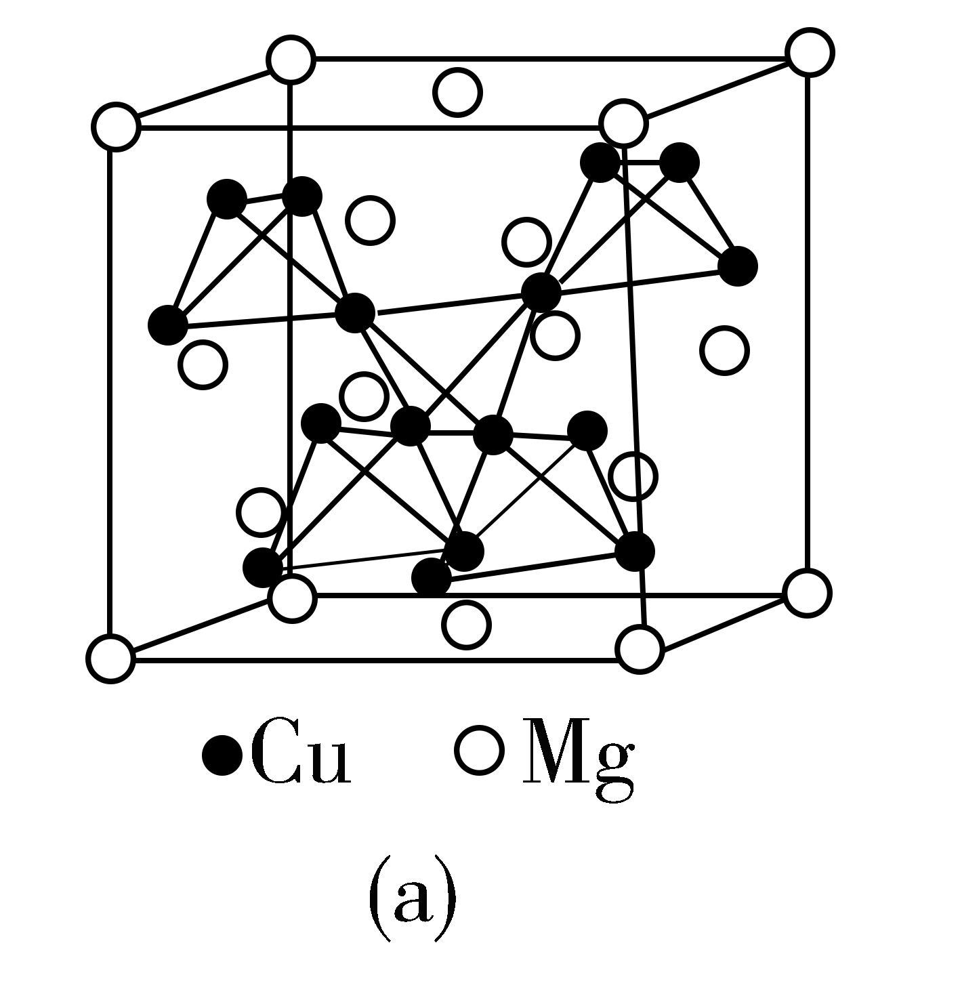
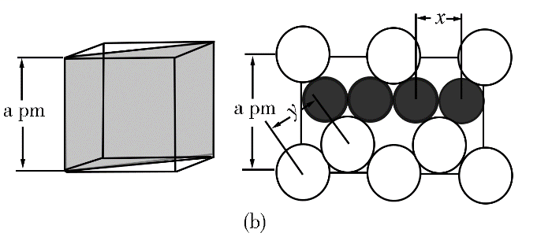
查看原题图／原始配图
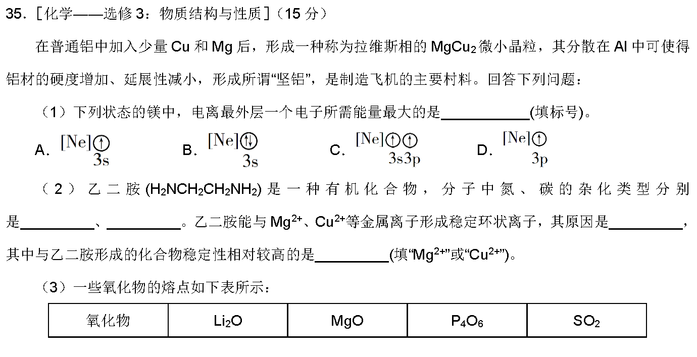
原始配图 1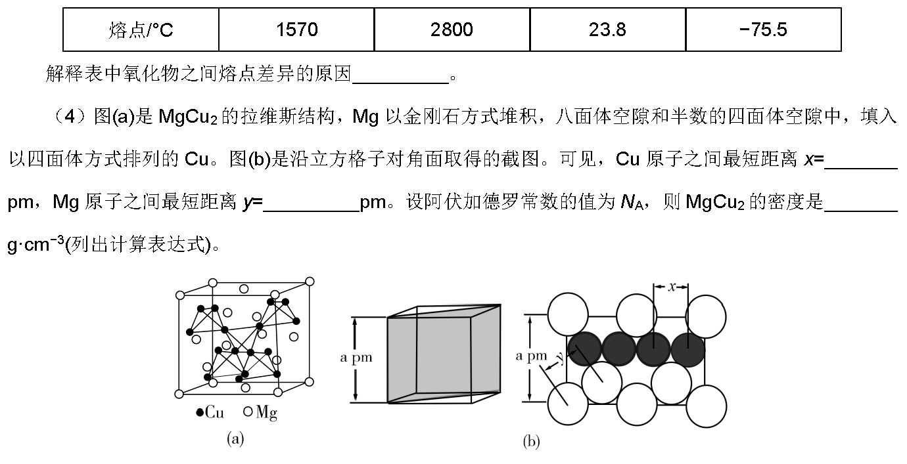
原始配图 2所用高中知识
电子能量、电离能、配位键、离子/分子晶体、金刚石结构与晶胞质量。
读题与思路
A为Mg⁺基态3s¹，从正离子移除电子比中性Mg更难，也比激发Mg⁺3p¹难。乙二胺C/N均sp³，两个N孤对可成五元螯环，Cu²⁺配位较稳定。Li₂O、MgO离子晶体熔点高，Mg²⁺电荷更高且小、晶格能更大；P₄O₆比SO₂分子较大、分子间作用更强。截面得Cu间距√2a/4；金刚石Mg间距√3a/4；每胞8Mg与16Cu，质量1216/NA，体积a³×10⁻³⁰ cm³。
分步解析
- （1）A为[Ne]3s¹，即Mg+基态，下一次失电子属于第二电离，所需能量较大。B为中性基态Mg，C为3s¹3p¹激发态，D为电子位于3p的Mg+激发态；激发态电子更易移除，故选A。
- （2）乙二胺中N有3个σ键、1对孤电子，C有4个σ键，均sp³。两个N各提供一对孤电子与同一金属离子配位，可形成五元螯合环，稳定性较高；Cu的电负性大于Mg，Cu2+与N供电子原子的配位结合较强，因此题给两金属中Cu2+形成的配合物更稳定。
- （3）Li2O、MgO是离子晶体，离子间强静电作用使熔点高；Mg2+电荷更大、半径较小，MgO晶格能更大，熔点高于Li2O。P4O6、SO2为分子晶体，熔点低；前者分子较大、电子多，分子间作用较强，故熔点较高。
- （4）截面中4段Cu—Cu最近间距排在长为√2a的面对角线上，x=√2a/4 pm。Mg按金刚石型排列，最近两Mg的位移各为a/4，y=√[(a/4)²+(a/4)²+(a/4)²]=√3a/4 pm。
- 晶胞含Mg 8个、Cu 16个。质量=(8×24+16×64)/NA=1216/NA g；体积=(a×10−10)³ cm³。ρ=1216×1030/(NAa³) g·cm−3。
答案
（1）A。（2）sp³、sp³；两个N用孤电子对与金属配位成环；Cu²⁺。（3）Li₂O、MgO为离子晶体，P₄O₆、SO₂为分子晶体；晶格能MgO>Li₂O，分子间作用力（相对分子质量）P₄O₆>SO₂。（4）√2a/4；√3a/4；1216×10³⁰/(Nₐa³) g·cm⁻³。
检查与易错点
氮的σ键数为3，但价层电子对总数为4。MgO晶格能不能以“分子量较大”解释。1 pm=10⁻¹⁰ cm。
本题来源：paper2019 · doc-paper
返回原卷说明与相对原子质量 返回非选择题说明 返回选考题说明
题目与已知条件
（15分）化合物G是一种药物合成中间体，其合成路线如下：
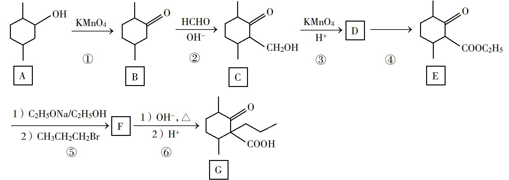
回答下列问题：
（1）A中的官能团名称是__________。
（2）碳原子上连有4个不同的原子或基团时，该碳称为手性碳。写出B的结构简式，用星号(*)标出B中的手性碳__________。
（3）写出具有六元环结构、并能发生银镜反应的B的同分异构体的结构简式__________。(不考虑立体异构，只需写出3个)
（4）反应④所需的试剂和条件是__________。
（5）⑤的反应类型是__________。
（6）写出F到G的反应方程式__________。
（7）设计由甲苯和乙酰乙酸乙酯(CH3COCH2COOC2H5)制备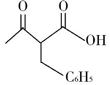
的合成路线__________(无机试剂任选)。
查看原题图／原始配图
原始配图 1原始配图 2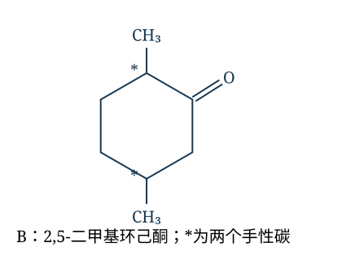
修订前解析配图 3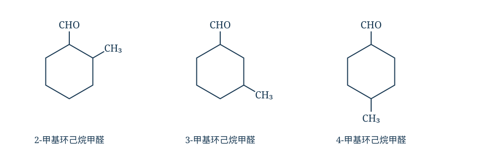
修订前解析配图 4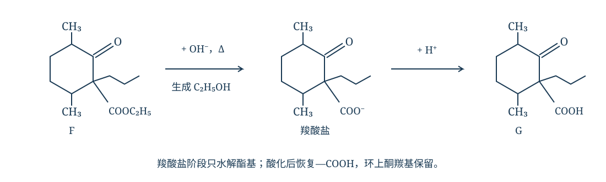
修订前解析配图 5 所用高中知识
醇氧化、手性碳、醛类异构体、酯化、羰基邻位取代、酯水解。
读题与思路
A醇氧化为2,5-二甲基环己酮B，两个带甲基的环碳分别连接两条不同环路径，都是手性碳。B式C₈H₁₄O，六元环银镜异构体可取2/3/4-甲基环己烷甲醛。甲醛加成后醇氧化成酸，乙醇/浓硫酸加热酯化；α碳与1-溴丙烷取代形成F，再酯水解酸化得G。甲苯光照溴代产生苄溴，乙酰乙酸乙酯α苄基化后水解、酸化得目标β-酮酸，避免额外长时间加热导致脱羧。
分步解析
- （1）A的含氧官能团是羟基。①把环上的—CHOH—氧化为>C=O，得到2,5-二甲基环己酮B。
- （2）B中两个带CH3的环碳各连接H、CH3以及不相同的两条环路径，均为手性碳；羰基碳为平面三角形，不是手性碳。结构与星号见图。
- （3）B为C8H14O，含一环一双键。要求六元环并银镜反应，可保留环己烷环，把唯一氧安排为—CHO，再用余下一个碳作—CH3。举2-、3-、4-甲基环己烷甲醛三例；各为C8H14O。
- （4）D的—COOH与乙醇酯化成为E的—COOC2H5，需C2H5OH、浓硫酸，加热。
- （5）⑤利用碱作用使酮羰基邻位的H被正丙基取代，形成新的C—C键，属于取代反应。F的正丙基必须位于同时带酯基的环碳上。
- （6）F先在OH−、加热条件下仅使酯基水解：R—COOC2H5+OH−→R—COO−+C2H5OH；随后R—COO−+H+→R—COOH。此处R保留原环及酮羰基，完整结构式见图。
- （7）甲苯先用Br2、光照进行苄位取代，得C6H5CH2Br。乙酰乙酸乙酯在C2H5ONa/C2H5OH作用下再与该苄溴反应，得CH3COCH(CH2C6H5)COOC2H5；经OH−、加热水解和H+酸化，得目标CH3COCH(CH2C6H5)COOH。
答案
（1）羟基。（2）B为2,5-二甲基环己酮，两个连有甲基的环碳为手性碳（标*）。（3）如2-甲基环己烷甲醛、3-甲基环己烷甲醛、4-甲基环己烷甲醛（任写3个）。（4）乙醇、浓硫酸，加热。（5）取代反应。（6）F在OH⁻、加热条件下酯基水解生成羧酸盐和乙醇，再经H⁺酸化得G（酮羰基保留）。（7）甲苯苄位溴代→乙酰乙酸乙酯α位苄基化→酯水解、酸化。
检查与易错点
银镜异构体题只要求写3个，不应宣称只有这3个。F→G必须保留酮羰基，不可同时把它还原或水解。β-酮酸成品避免继续强热而脱羧。
本题来源：paper2019 · supplement2019 · doc-paper
题源与核验说明
- 2019.html旧版解析文件；SHA-256：b1f5d2b5334c58ec53fd75963516a9d2d9151f5d055b960d6bfa863c4b40034b
- 2019年高考真题——理科综合（全国卷Ⅰ） Word版含解析【KS5U 高考】.doc原卷文件；SHA-256：63ba24679cde647b4b74ee0275a4782d4e455505fecfb02d7dabaf7245117ce2
- 厦门新东方：2019全国Ⅰ卷理综化学高考试卷同卷题面或参考资料的公开来源；参考答案仅作对照，解析按题设给出推导。
- 朴新教育高中化学教研组：2019全国Ⅰ卷题目与解析（2019-06-10）同卷题面或参考资料的公开来源；参考答案仅作对照，解析按题设给出推导。
- 2019全国Ⅰ卷理综题面转载：卷首原子质量仅交叉核对卷首H、C、N、O、Mg、S、Fe、Cu八项原子质量；不用于答案推导。